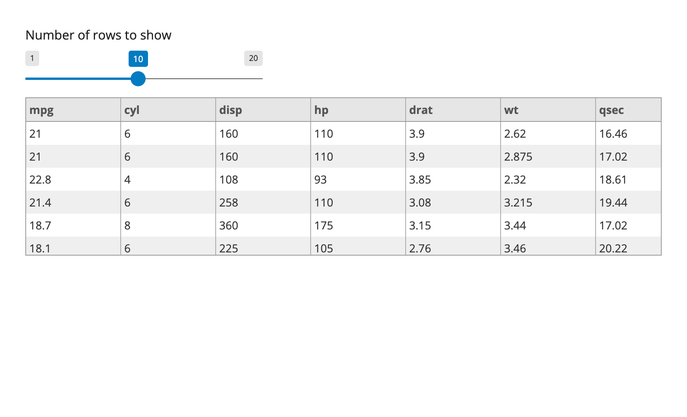

Custom JavaScript component
In this post, you will learn how to create a custom element and accompanying output binding in Shiny. This is useful if you want to create an output that is not currently in Shiny for your app.
This post talks about making a one-off component for a given app. If you plan on reusing your component or distributing it for others to use, see the accompanying post on making a custom component package.
The code shown here is simplified to get the point across, but before you use it in your own app, you should make sure to add error handling and other features to make it robust.
The problem
You found a new table library that you really want to use in your Shiny app. The library is Tabulator, which is a JavaScript library for making tables with data. But there’s a problem: there’s (currently) no way to easily use it from a Shiny app. To do this, we’ll need to write some Python code that will let us use the library from the Python side of Shiny, and wrap the library’s JavaScript code to make it talk to JavaScript side of Shiny.
The solution
To implement a custom Tabulator element for your app, you’ll need to write three things:
- A JavaScript script that renders the element on the client side using the Tabulator library
- An
output_tabulator()function for placing the element in your app’s UI - A
render_tabulator()decorator for passing table data to the JavaScript code rendering the element on the server side
The JavaScript code
First things first: to use a custom JavaScript library we need to write… some JavaScript.
To do this we will create a new folder called tabulator/ that has the following structure:
This example uses plain JavaScript with no build step. For an example using typescript and with a build-step see the accompanying article on making a custom component package.
tabulator/
tabulator_esm.min.js
tabulator.min.css
tableComponent.jsBoth tabulator_esm.min.js and tabulator.min.css are downloaded from tabulator’s website. tableComponent.js is the script that we will write that contains the code for rendering the table to our Shiny app.
The code in this article will be abbreviated to show the relevant parts. If you want to see the full code, see the accompanying repo.
To create an output binding in Shiny, we create a new instance of the Shiny.OutputBinding class.
tableComponent.js
class TabulatorOutputBinding extends Shiny.OutputBinding {
// Find element to render in
find(scope) { ... }
// Render output element in the found element
renderValue(el, payload) { ... }
}
// Register the binding
Shiny.outputBindings.register(
new TabulatorOutputBinding(),
"shiny-tabulator-output"
);This class has two methods that we need to implement: find() and renderValue(). The find() method is used to identify the element that will contain the rendered table. The renderValue() method is used to render the table in the element. After making that class we need to register it with Shiny so it can find and send data to instances of our output.
The find() method
Now that we have the scaffolding set up we can start by filling in the find method. This function is passed a scope object, which is a jQuery selection and should return the element you wish to render your output into.
tableComponent.js
class TabulatorOutputBinding extends Shiny.OutputBinding {
find(scope) {
return scope.find(".shiny-tabulator-output");
}
renderValue(el, payload) {...}
}
Shiny.outputBindings.register(...);Note that we’re using the class ".shiny-tabulator-output" here to mark the element that we want to render the table in. This is the same class that we will use in our output_tabulator() function in our app’s server code. You can use any valid CSS selector here, but it’s common to use a class name that descibes the output.
The renderValue() method
Next, we fill in the main logic for rendering our table in to the renderValue method. This method gets passed two arguments: el, which is an HTMLElement identified by our find function, and payload, which is the data that the server has provided from the render function (more on this soon).
tableComponent.js
// Import the Tabulator library
import { Tabulator } from "./tabulator_esm.min.js";
class TabulatorOutputBinding extends Shiny.OutputBinding {
find(scope) { ... }
renderValue(el, payload) {
// Unpack the info we get from the associated render function
const { columns, data, type_hints } = payload;
// Convert the column names to a format that Tabulator expects
const columnsDef = columns.map((col, i) => {
return {
title: col,
field: col,
hozAlign: type_hints[i] === "numeric" ? "right" : "left",
};
});
// Data comes in as a series of rows with each row having as many elements
// as there are columns in the data. We need to map this to a series of
// objects with keys corresponding to the column names.
function zipRowWithColumns(row) {
const obj = {};
row.forEach((val, i) => {
obj[columns[i]] = val;
});
return obj;
}
// Instantiate a new Tabulator table in the element.
// This will also destroy any existing table in the element
// so we don't have to worry about adding and removing tables.
new Tabulator(el, {
data: data.map(zipRowWithColumns),
layout: "fitColumns",
columns: columnsDef,
});
}
}
Shiny.outputBindings.register(...);The implementation of this function is not terribly important and draws directly from the tabulator docs.
What matters is that we take our data, transform it in some way, and then instantiate our table with the new Tabulator(el, {...}) call. In this case we take data in the form of the rows of a passed data frame, the column names, and the types of those columns (this is determined by the render decorator), and construct a js object in the form of data = [{col1: foo1, col2: bar1, ...}, {col1: foo2, col2: bar2, ...}]. We also combine the column names and types to create the columnsDef object that Tabulator expects.
Don’t worry too much about following this particular format because it will change depending on the component that you are wrapping.
This code relies on the Shiny object existing in the JavaScript context, but you may want to wrap all the above code in an if (Shiny) statement so it only runs if the Shiny object exists. This is useful if you’re writing a component that might be used in a non-Shiny context because your code won’t error out trying to access the non-existant Shiny variable and break the document.
tableComponent.js
if (Shiny) {
class TabulatorOutputBinding extends Shiny.OutputBinding { ... }
Shiny.outputBindings.register(...);
}To see the full JavaScript code, see tabulator/tableComponent.js in the accompanying repo.
The output_tabulator() function
Next we need an HTML element to target with our JavaScript code. When we set up the find method for our binding, we chose the class shiny-tabulator-output as the mark of a tabualtor output, so we need to add that class. We also need to allow the user to set the ID of the element so that Shiny knows which element to target with which output. By wrapping the id argument in resolve_id() we make sure it will work in the context of modules. We’ll also add a height argument so that the user can set the height of the table.
app.py
from shiny import App, Inputs, ui
from shiny.module import resolve_id
from htmltools import HTMLDependency
tabulator_dep = HTMLDependency(
"tabulator",
"5.5.2",
source={"subdir": "tabulator"},
script={"src": "tableComponent.js", "type": "module"},
stylesheet={"href": "tabulator.min.css"},
all_files=True,
)
def output_tabulator(id, height="200px"):
return ui.div(
tabulator_dep,
# Use resolve_id so that our component will work in a module
id=resolve_id(id),
class_="shiny-tabulator-output",
style=f"height: {height}",
)We use the HTMLDependency function to bind up the assets needed for tabulator that we made in the previous step to make sure that they’re included in our app whenever the output_tabulator() function is called (but not more than once).
Note the use of all_files=True here. This makes it so we can do the ESM import of the Tabulator library. Otherwise tabulator_esm.min.js would not be hosted and the JS library wouldn’t be able to find it.
Now, the output_tabulator() function can be called anywhere we want to render a table in our app.
The render_tabulator() decorator
Now we’ve got the client-side logic finished, we need to write a custom render decorator that sends our data into the component.
A render function’s job is to take the result of calling the decorated function, transform it into the format our client-side code wants (in many cases this may be as simple as just returning the object unchanged), and then returning that client-side friendly data which will be passed to our client’s renderValue() method.
To do this we can leverage some tools provided by Shiny in the shiny.render.renderer subpackage.
app.py
from shiny.render.renderer import Jsonifiable, Renderer
class render_tabulator(Renderer[pd.DataFrame]):
"""
Render a pandas dataframe as a tabulator table.
"""
def auto_output_ui(self):
"""
Express UI for the tabulator renderer
"""
return ui.output_tabulator(self.output_name)
async def transform(self, value: pd.DataFrame) -> Jsonifiable:
"""
Transform a pandas dataframe into a JSONifiable object that can be
passed to the tabulator HTML dependency.
"""
if not isinstance(value, pd.DataFrame):
# Throw an error if the value is not a dataframe
raise TypeError(f"Expected a pandas.DataFrame, got {type(value)}. ")
# Get data from dataframe as a list of lists where each inner list is a
# row, column names as array of strings and types of each column as an
# array of strings
return {
"data": value.values.tolist(),
"columns": value.columns.tolist(),
"type_hints": value.dtypes.astype(str).tolist(),
}In the code above we use types so that we can get some type checking in our IDE, but these are not required.
An implementation of Renderer produces a class which is intended to be used as a decorator, which is why a render_* naming convention is recommended. An implementation requires at least 3 things: (1) auto_output_ui, (2) either a transform or render function, and (3) an value type for the Renderer class.
Here, the value type we’ve used is pd.DataFrame, which helps users know if they’ve returned a suitable object in their render function.
The auto_output_ui() method is used to generate the UI for the output if the renderer were to be used in Express mode. In this case we just use the output_tabulator() function we wrote earlier.
Finally, renderers use either the transform(self, value: IT) or render(self) methods to retrieve and transform the result of an output value function into an object that can be sent to the client. render_tabulator’s transform method returns a dictionary of data (which is JSON-like, e.g. Jsonifiable) to be passed to the client side. The transform method is called when the output value function returns a non-None value. If the value is None, the render method quits early, returning None.
transform function?
It is required by Shiny Renderer that the transform be async. This allows for asynchronous transformations to occur even if the output value function is synchronous. By providing an async function, Renderer can then handle either an async or sync function provided by the user.
When first transforming an output value, we check to make sure that the value returned by the function is a dataframe. If it’s not, we throw an error. This is not required, but it’s good practice to do so.
...
if not isinstance(value, pd.DataFrame):
# Throw an error if the value is not a dataframe
raise TypeError(f"Expected a pandas.DataFrame, got {type(value)}. ")
...Finally, we return a dictionary of data that we want to pass to the client side. In this case we return the data as a list of lists, the column names as an array of strings, and the types of each column as an array of strings using methods provided by pandas.
...
return {
"data": value.values.tolist(),
"columns": value.columns.tolist(),
"type_hints": value.dtypes.astype(str).tolist(),
}
...This returned value is then what gets sent to the client side and is available in the payload argument of the renderValue() method of our TabulatorOutputBinding class.
The result
Now we have all the components neccesary to use our tabulator output component. Here’s an app that uses it to render some number of rows of the indomitable mtcars dataset.
from pathlib import Path
import pandas as pd
from shiny.express import input, ui
# Code for the custom output
...
# App code
ui.input_slider("n", "Number of rows to show", 1, 20, 10)
@render_tabulator
def tabulatorTable():
return pd.read_csv(Path(__file__).parent / "mtcars.csv").head(input.n())app.py
from pathlib import Path
import pandas as pd
from shiny import App, Inputs, ui
# Code for the custom output: output_tabulator and render_tabulator
...
# App code
app_ui = ui.page_fluid(
ui.input_slider("n", "Number of rows to show", 1, 20, 10),
output_tabulator("tabulatorTable"),
)
def server(input: Inputs):
@render_tabulator
def tabulatorTable():
csv_file = Path(__file__).parent / "mtcars.csv"
return pd.read_csv(csv_file).head(input.n())
app = App(app_ui, server)Which results in the following app:

To see the full app script, see app.py in the accompanying repo for this post here.